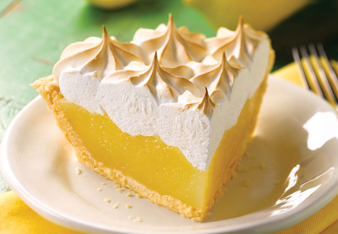

"Tentaciones y picoteos"





La receta original de las empanadas tucumanas. Hechas con carne cortada a cuchillo. Todos los ingredientes para preparar la masa tradicional.
La clave de esta masa original y casera es un largo reposo y jugar siempre bien con la cantidad de ingredientes para que quede esponjosa y fina.
Hoy queremos compartir nuestra receta de Pascualina, completa y bien casera, para que disfrutes de esta tarta tan simple y deliciosa.
Las empanadas árabes o Fatay, como prefieran llamarlas son un estandarte de la cocina egipcia, palestina y sirio-libanesa, en el mundo entero!!.
El sándwich de bondiola a la barbacoa lleva mucho tiempo de preparación previa y cocción, pero el resultado vale la espera.
Si quieres probar unas increíbles papas gratinadas con queso ¡Ya verás lo buenas que están las patatas al horno cocinadas de esta forma!